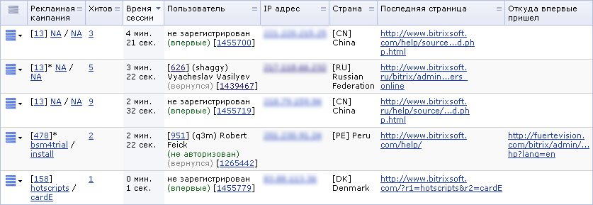

На странице показана таблица сессий и посетителей, проявивших активность на сайте за последнее время. Таблица автоматически обновляется через промежуток времени, задаваемый на странице. Для этого нужно выбрать одно из значений 20, 30, 60, 120 или 300, которые определяют время обновления в секундах. Для немедленного обновления списка нажмите на ссылку Обновить. Таймер в круглых скобках показывает количество секунд до следующего обновления.
Фильтр
С помощью фильтра отображаются данные по интересующим параметрам.
| Параметр | Описание |
|---|---|
| ID, логин, имя, фамилия* | ID, логин, имя или фамилия пользователя. |
| ID сессии* | Маска идентификатора требуемых сессий. |
| ID посетителя * | Идентификатор посетителя сайта (не пользователя). |
| Зарегистрирован | Определяет, отображать ли только сессии зарегистрированных посетителей, незарегистрированных или всех. |
| Впервые/вернулся | Флаг, позволяющий отфильтровать сессии посетителей, впервые посетивших сайт либо вернувшихся на сайт. |
| Добавил в избранное | Флаг, позволяющий отфильтровать сессии, в течении которых посетитель добавил сайт в избранное. |
| IP адрес* | Маска IP адреса искомых посетителей. |
| Страна* | Отбор сессии по стране посетителя (определяется по IP адресу). В квадратных скобках можно ввести двухсимвольную аббревиатуру страны (напр., RU, BY, US). |
| Попал в стоп-лист | Фильтр сессий посетителей, которые были добавлены в стоп-лист. |
| ID записи стоп-листа* | Отбор сессий заблокированных пользователей по маске идентификатора записи в стоп-листе. |
| Хитов | Интервал для отбора сессий по количеству страниц (хитов), загруженных в течении сессии. |
| Пришел по рекламной кампании | Фильтр сессий посетителей, сделавших прямой заход, либо возврат по рекламной кампании. |
| ID рекламной кампании* | Маска ID рекламной кампании при поиске по предыдущему полю. |
| referer1 / referer2* | Идентификаторы рекламной кампании – referer1, referer2 (при поиске по полю Пришел по рекламной кампании). |
| referer3* | Дополнительный параметр при заходе по рекламной кампании – referer3 (при поиске по полю Пришел по рекламной кампании). |
| Возврат по рекламной кампании | Фильтр сессий посетителей или на прямом заходе по рекламной кампании, или на возврате (при поиске по полю Пришел по рекламной кампании). |
| Откуда впервые пришел | Страница, с которой посетитель впервые пришел на сайт. |
| Последняя страница* | Фильтр сессий посетителей по последней просмотренной странице и сайту.
В выпадающем списке (ошибка 404) можно указать, отображать ли только запросы несуществующих страниц. |
* - для данных полей Вы можете воспользоваться специальными логическими выражениями.
Чтобы установить фильтр по заданным критериям поиска, нажмите кнопку Найти. Для отображения всех данных нажмите кнопку Отменить.
Контекстная панель
| Кнопка | Описание |
|---|---|
| Настроить | Переход к диалогу настройки внешнего вида отчетной формы. |
| Excel | Экспорт данных из таблицы в формат MS Excel. |
Таблица сессий и посетителей
| Колонка | Описание |
|---|---|
| Меню действий
| Отображает меню, содержащее команды:
|
| Рекламная кампания | Если посетитель сделал прямой заход либо возврат по рекламной кампании, то в данном столбце выводятся: ID рекламной кампании, referer1 / referer2. Ссылка на ID кампании открывает список кампаний с фильтром, установленным на эту кампанию. |
| Хитов | Количество страниц (хитов), просмотренных в течении сессии. Ссылка на показателе открывает список хитов с фильтром, установленным на ID посетителя. |
| Время сессии | Длительность сессии. |
| Посетитель | Если посетитель зарегистрирован, то данные в формате:
|
| IP адрес | IP адрес посетителя. Ссылка на значении открывает страницу поиска информации по этому адресу (http://www.whois.sc/IP). |
| Страна | Страна посетителя (определяется по IP адресу). |
| Последняя страница | Последняя страница, просмотренная посетителем. |
| Откуда впервые пришел | Страница, с которой посетитель впервые пришел на сайт. |
| Выбрано | Общее количество посетителей, присутствующих в настоящее время на сайте одновременно. |
Пример таблицы

| © «Битрикс», 2001-2008, «1C-Битрикс», 2008 | 1С-Битрикс: Управление сайтом |